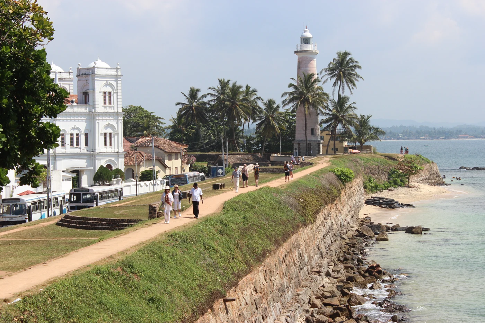

THE CLASSIC ISLAND JOURNEY
Island Overture
Ancient landmarks, tea country, wildlife and a final pause beside the sea.
Make this journey mine ↗CEYLON VOYAGERS / SIGNATURE JOURNEY 01A little more discovery ↓
YOUR TIME10 days
THE FEELBalanced discovery
THE APPROACHMade flexible
A suggested journey.
Shaped around you.
MOMENTS TO MAKE ROOM FOR
A few reasons to fall for this journey.

Tea country & Ella viewpoints

Jeep safari around Yala

Galle Fort & beach time
Images offer a glimpse of Sri Lanka’s landscapes and experiences; individual stops and conditions may differ.
10 DAYS. YOUR KIND OF DISCOVERY.
Every day,
a new perspective.
A day-by-day starting point, with room for the moments you never planned.
01DAY 01Colombo arrival
Welcome and settle in after landing. If arrival time and energy allow, take an easy walk around Galle Face or Colombo Fort rather than scheduling a full sightseeing day.
Galle Facelocal diningrecovery time
SUGGESTED NIGHTColombo
02DAY 02Colombo to Sigiriya
Travel inland toward the Cultural Triangle. An optional stop at the Dambulla cave-temple complex adds heritage before check-in, depending on arrival and transfer conditions.
Scenic driveDambulla optionalrelaxed evening
SUGGESTED NIGHTSigiriya / Habarana
03DAY 03Ancient Sigiriya
Visit Sigiriya Rock Fortress early for cooler conditions and views. Choose a gentle village experience in the afternoon, or an optional Pidurangala viewpoint if a second climb suits the group.
Sigiriya Rockvillage lifePidurangala optional
SUGGESTED NIGHTSigiriya / Habarana
04DAY 04From Sigiriya to Kandy
Head south toward Kandy with a possible cultural or craft stop around Matale. Explore Kandy Lake and, if appropriate for the group, visit the Temple of the Sacred Tooth Relic.
Matale corridorKandy Lakesacred heritage
SUGGESTED NIGHTKandy
05DAY 05Tea country to Ella
Cross the central highlands toward Ella, with tea scenery and a Nuwara Eliya-area stop. A rail segment is optional if schedules and seats fit; expect a longer transfer.
Tea estateshighland viewpointsrail option
SUGGESTED NIGHTElla
06DAY 06A slower day in Ella
Enjoy an unhurried hill-country day. Walk toward Nine Arch Bridge, take the accessible Little Adam's Peak trail if conditions suit, and allow time for cafes, tea or simply the mountain views.
Nine Arch BridgeLittle Adam's Peakdowntime
SUGGESTED NIGHTElla
07DAY 07Ella to Yala country
Descend from the hills toward the southeastern plains. Stop for a waterfall or scenic viewpoint en route, then settle near the park and prepare for an early safari departure.
Changing landscapesRavana Falls arearest
SUGGESTED NIGHTTissamaharama / Yala area
08DAY 08Safari and the south coast
Begin with a guided jeep safari in the Yala area if the park is operating. After a break, continue toward Galle; this is a substantial transfer day, so keep evening plans light.
Yala wildlife habitatcoastal arrival
SUGGESTED NIGHTGalle / south coast
09DAY 09Galle and seaside time
Walk the ramparts and lanes of Galle Fort, browse small galleries and enjoy the coastal atmosphere. Spend the afternoon at a nearby beach or leave it unscheduled.
Galle Fortlighthouse areacoastal cafes
SUGGESTED NIGHTGalle / Unawatuna
10DAY 10Return to Colombo
Travel back toward Colombo and the airport, with departure timing planned around road conditions and flight check-in. Add an airport-area night when flight schedules require it.
Coastal-to-capital transferonward journey
SUGGESTED NIGHTDeparture
Suggested pacing and overnight areas. Day order and stops can change with arrival times, weather, access and your preferred pace.
THE LITTLE DETAILS MATTER
Thoughtfully planned.
Ready to make yours.
This is a flexible trip concept, rather than a confirmed departure or booking. We’ll shape the practical details around your dates and preferences.
Dates & weather
Match the regions and experiences with your travel dates. Beach, surf and wildlife conditions vary across the island.
Access & activities
Attraction access, park blocks, guides, vehicle availability, rail seats and optional activities are confirmed during planning.
Your pace
Climbs, early starts, walking demands and road transfers can be adjusted around your mobility, interests and comfort.
Price & inclusions
No fixed package price, hotel category, meals, guide services or admission tickets are included or confirmed by this outline.
Thoughtful travel
Respect sacred places, communities and wildlife. Animal sightings and sea-based activities are never guaranteed.
YOUR NEXT CHAPTER
This route.
Your rhythm.
Tell us what you love, what you’d change, and when you’d like to go.
FOLLOW ANOTHER FEELING
A different way to see the island.

7 DAYS · HERITAGE-FOCUSED
Kingdoms & Quiet Temples
Discover this journey ↗7 DAYS · SCENIC DISCOVERY